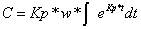
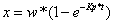

Die Füllstandsregelung ist ähnlich der Klospülung. In einem Gefäß ist ein Werkstück, das von einer Flüssigkeit, dem Elektrolyt umgeben ist. Der Füllstand der Flüssigkeit soll geregelt werden. Die Flüssigkeit wird durch eine Pumpe zugeführt. In der Grefik sind zwei Leitungen eingezeichnet. Eine für den Zufluß und eine für den Abfluß. Die rote Linie ist der Sollwert. Der rechte rote Balken ist die Differenz zwischen Sollwert und Istwert. Diese Differenz wird mir dem Wert in dem oberen Kästchen multipliziert und dann als Stellgöße ausgegeben. Der rote ovale Schwimmernimmt den Istwert auf. Die Wellen in dem Gefäß kommen von der Verfahrbewegung des Gefäßes. Die Bewegung wird nicht dargestellt. Der Regler sollte so eingestellt werden, dass das Gefäß schnell befüllt wird, aber die Befüllung so ruhig wie möglich geschieht, das heißt die Wellen sollen keine großen Änderungen bei der Stellgröße verursachen. Wenn man den Regler maximal einstellt, geht das Befüllen am schnellsten, aber die Wellen verursachen eine große Änderung der Stellgröße. Es ist daher ein Kompromis zwischen schnellen Füllen des Behälters und kleinen Änderungen der Stellgröße zu finden.
Die Stellgröße y ergibt sich aus
der Regeldifferenz xd multipliziert mit dem Proportionalregler Kp.
Die Regeldifferenz ist Sollwert w – Iswert x.
y=Kp*xd
y=Kp(w-x)
Die
Änderung des Füllstands ergibt sich durch Zufluss - Abfluss
Wenn
man die Stellgröße einsetzt ergibt sich:
Als erstes löst man die homogene Differentialgleichung:
In der Gleichung ist der Funktionswert und die Steigung enthalten. Bei der e-Funktion ändert sich die Steigung mit dem Funktionswert. Man wählt also einen Rateansatz:
Eingesetzt in diie Differentialgleichung:
Die Lösung der homogenen Differentialgleichung
Nun
wird der inhomogene Lösungsanteil gesucht. Dazu wird in die
Gleichung eingesetzt.
Nach
kürzen der Gleichung.
Nach
C` aufgelöst

Es
wird integriert
Die
Gesamtlösung setzt sich aus homogener und inhomogener Lösung
zusammen:
Die
Konstante für die homogene Lösung erhält man durch
einsetzen der Anfangsbedingung. X(0)=0
Die
Gesamtlösung ergibt sich daraus:

Nun
noch mal die Animation ohne Wellen und Messrauschen. Es ergibt sich
der typische Verlauf: